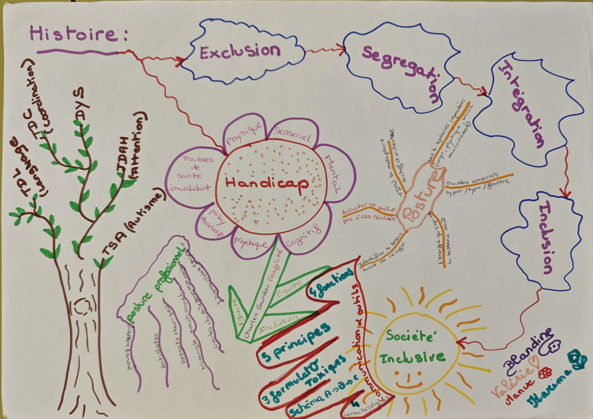
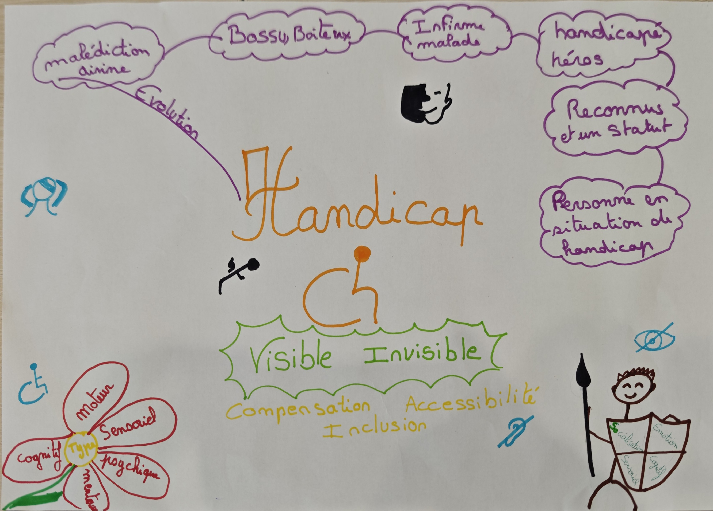
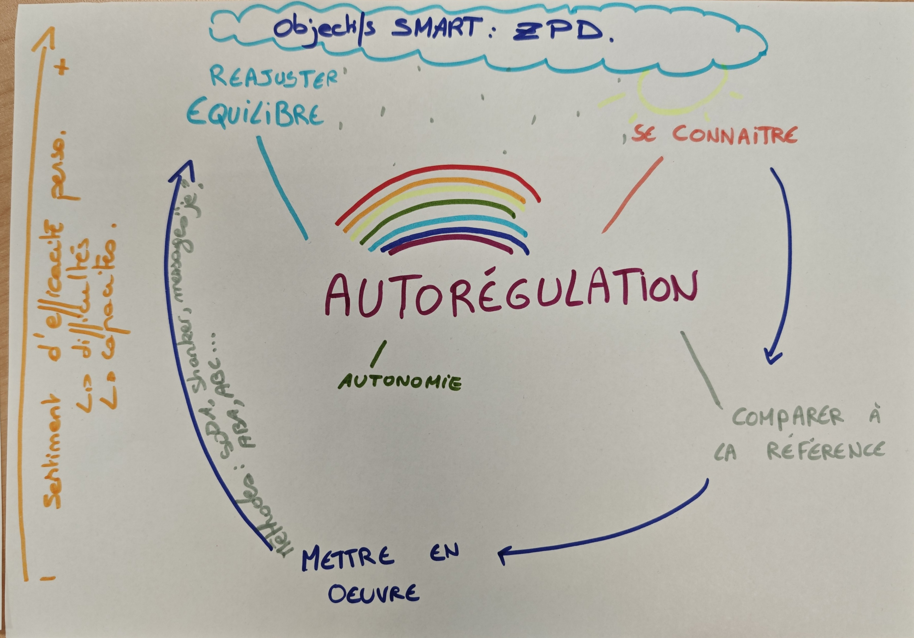
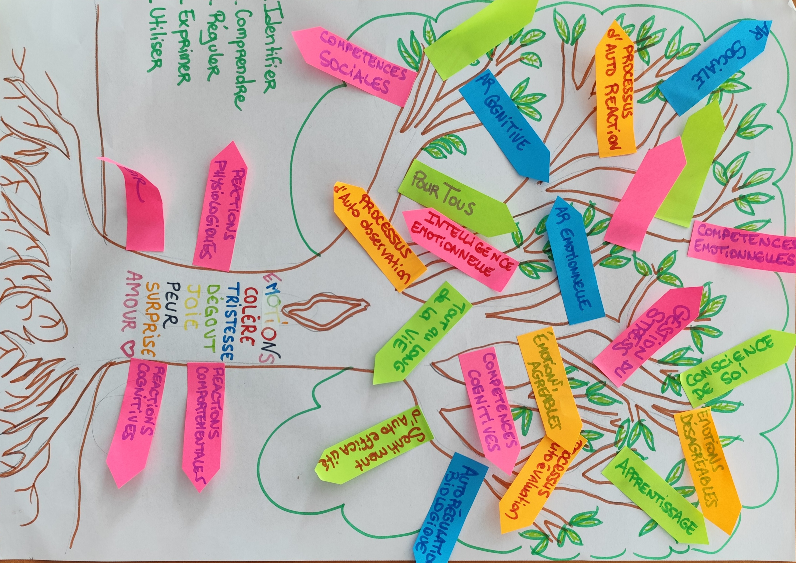
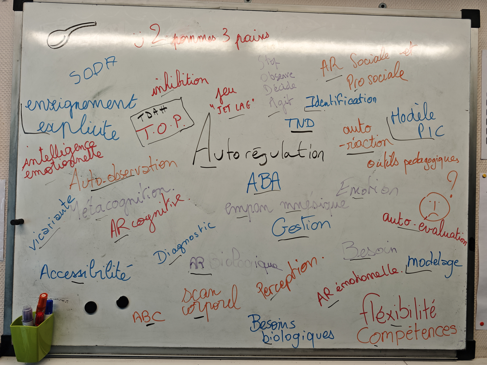
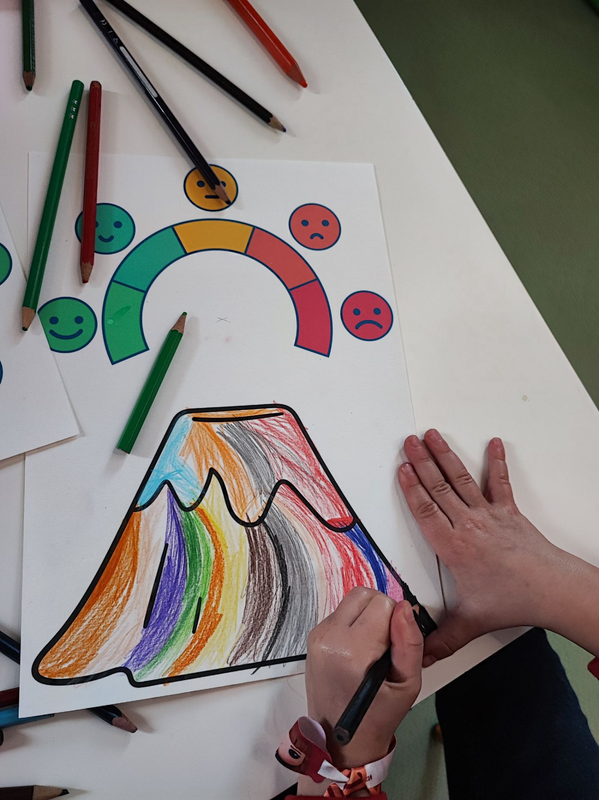
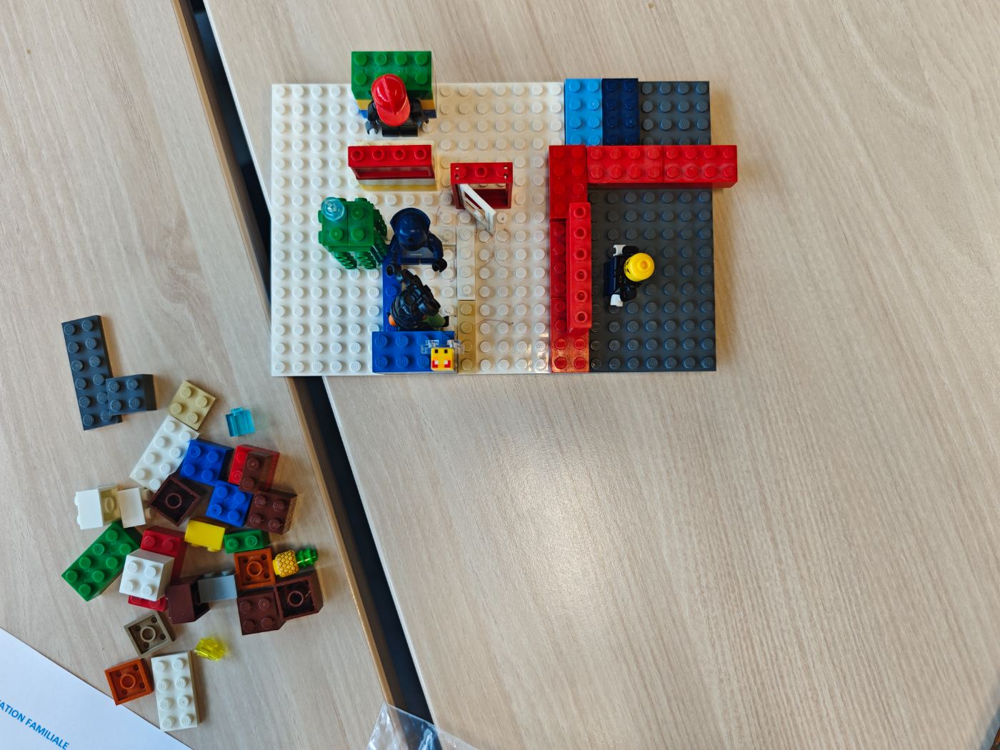
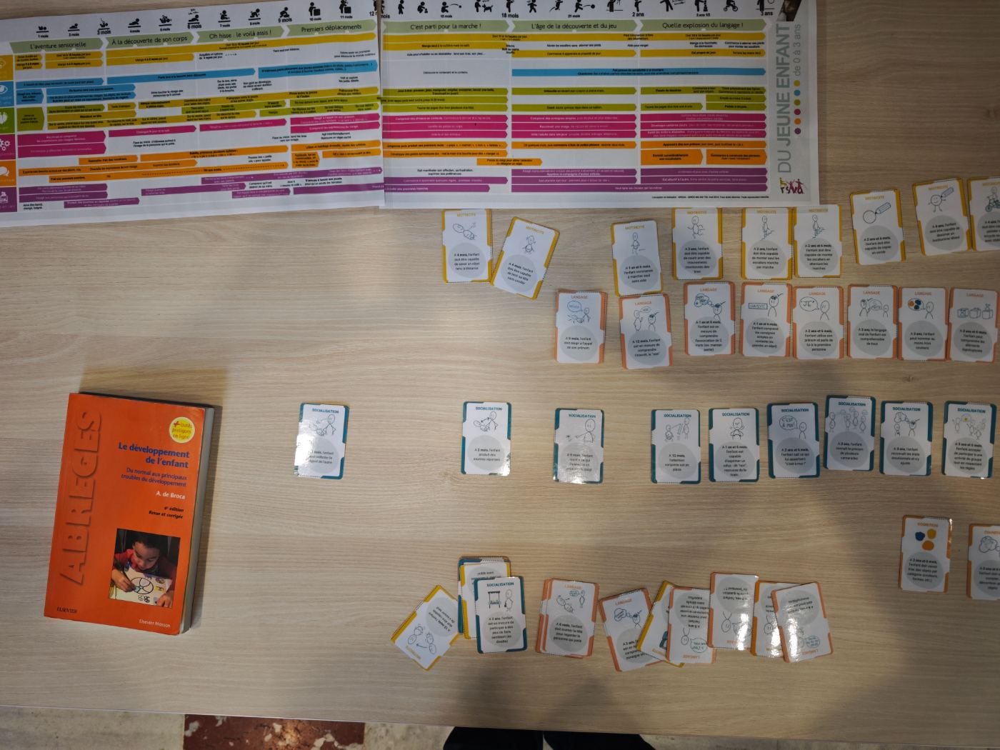
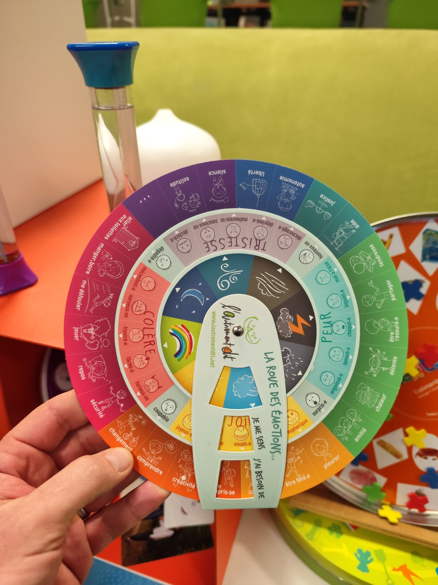

Formation · Supervision · Guidance — de la petite enfance à l'adulte
Former,concevoir,accompagner—sur mesure,toujours.
eyoch est une structure de formation et d'ingénierie pédagogique. Son gérant, Christophe Poulain, apporte 20 ans d'expérience terrain au service de chaque intervention — du diagnostic à la mise en œuvre.
A+ AutorégulationRéseau CanopéCNFPTCRAManabiMaat FormationAKD FormationEEST (école d'éducateurs)Vie ActivePEP62CREAICrèches & centres sociauxESMS · IME · SESSADÉducation nationale
★ Expertises
Quatre champs d'intervention, une même posture.
À chaque demande, un diagnostic partagé, puis un dispositif construit avec vous — porté par l'expertise terrain.
Formation sur mesure
eyoch conçoit et anime des formations ajustées à votre contexte, votre équipe, vos besoins réels. Un diagnostic partagé, puis un dispositif construit avec vous.
Enseignants, ATSEM, AESH
Éducateurs, auxiliaires de puériculture
Équipes médico-sociales, thérapeutes
Conférences, cycles, ateliers
TND, comportements défis & inclusion
TSA, TDAH, TOP, DYS — comprendre les profils neurodivergents pour adapter les pratiques, l'environnement et la posture professionnelle. L'autorégulation comme un outil parmi d'autres, au service du projet.
Approche A+ (autorégulation)
Approche Barkley
Analyse fonctionnelle
Environnement capacitant
Accompagnement parental — familles TND
eyoch propose des guidances parentales animées par Christophe : 20+ ans de milieu ouvert et 5 ans de formation, avec une assise en approche systémique pour un angle singulier auprès des parents d'enfants à besoins particuliers.
Ateliers « grandir, attachement »
Approche Barkley
Systémique & thérapie familiale
Guidance parentale
Supervision & analyse de pratiques
eyoch met en place pour les équipes un espace régulier — animé par Christophe — pour analyser les situations complexes, soutenir les pratiques et prévenir l'épuisement professionnel.
Analyse de pratiques
Étude de cas
Présentiel ou visio
Sur mesure selon l'institution
"
Avec eyoch, ensemble nous construisons une réponse ajustée. Partir de vos besoins pour être au plus près de votre projet.
C
Christophe Poulain
gérant d'eyoch
★ Approche
Une réponse construite avec vous, pour vous.
Quatre constantes dans toutes les interventions eyoch, quel que soit le public ou le format. C'est ce qui fait que ça fonctionne sur le terrain plutôt que sur le papier.
01
eyoch pense sur mesure
Chaque mission commence par un diagnostic partagé. eyoch conçoit des dispositifs sur mesure, ajustés à votre contexte, portés par votre réalité.
02
Christophe ancre dans le terrain
20 ans de milieu ouvert, de formation, de supervision. L'expertise de Christophe nourrit chaque intervention — systémique, expérientielle, ancrée dans les réalités du quotidien.
03
eyoch intervient partout, pour tous
Crèche, école, IME, ESMS, collectivité, centre social — de la petite enfance à l'adulte. eyoch connaît les logiques de chaque milieu et s'y adapte.
04
Des partenariats durables
eyoch grandit avec ses partenaires. Chaque collaboration nourrit une ambition commune : des pratiques professionnelles plus inclusives, des familles mieux outillées.
★ Méthodes d'apprentissage
Des outils qui rendent la pensée visible.
Cartes mentales, schémas, mind maps — apprendre en construisant sa propre représentation. Des supports créés à la demande, pour rendre les concepts accessibles et actionnables.

Inclusion & Handicap
Cartographier le chemin de l'exclusion vers l'inclusion

TND & Handicap
Représenter le handicap — visible et invisible

Autorégulation
Le cycle de l'autorégulation — se connaître, comparer, ajuster

Intelligence émotionnelle
L'arbre des émotions — construire ensemble une carte commune

Formation en action
Écrire, relier, questionner — le tableau comme espace de pensée collective
Parentalité
Le train du sommeil — construire le rituel du coucher
★ Créations sur mesure
Des réponses créées pour chaque contexte.
Ces exemples ont été conçus à la demande, pour un public précis, dans un contexte donné. C'est ça, le sur-mesure.

01 · Les émotions
Le volcan des émotions — accompagner les enfants à se réguler
Parents · Professionnels

02 · Lego Serious Play
Les objets flottants de l'analyse systémique — du concret au concept, du concept au concret
Équipes · Formation

03 · Cartes développement
Repères du développement 0-3 ans
Pluri-pro · Formation
04 · Projet RBPP
Se représenter les objectifs SMART — évoquer et modéliser la logique de projet
Multi-pro

05 · Espace
La roue des émotions — identifier, nommer et réguler ses émotions, pour tous
eyoch, c'est la structure. Moi, c'est l'expertise que j'y apporte.
« Éducateur spécialisé de formation, j'ai passé plus de 20 ans en milieu ouvert avant de fonder eyoch et de me consacrer à la formation. »
Cette trajectoire donne à eyoch quelque chose d'essentiel : la connaissance fine de la réalité du terrain, des contraintes des équipes et de la complexité des familles — pas depuis un bureau, mais dans le milieu écologique.
eyoch est une SASU basée en Hauts-de-France. À travers elle, Christophe intervient comme formateur, concepteur et consultant pour des structures très diverses : crèches, écoles, IME, ESMS, collectivités, centres sociaux. Son ancrage théorique croise l'approche systémique, la thérapie familiale, l'autorégulation (A+), l'approche Barkley et les sciences cognitives appliquées.
FPA 2023 · Formateur professionnel
Superviseur A+ certifié
Approche Barkley
Systémique & thérapie familiale
20+ ans éducateur · 5 ans formateur
SASU basée en Hauts-de-France
Construisons une réponse qui s'ajuste à votre contexte.
Un échange avec eyoch pour comprendre vos besoins, votre contexte, vos contraintes. Sans engagement, juste utile.